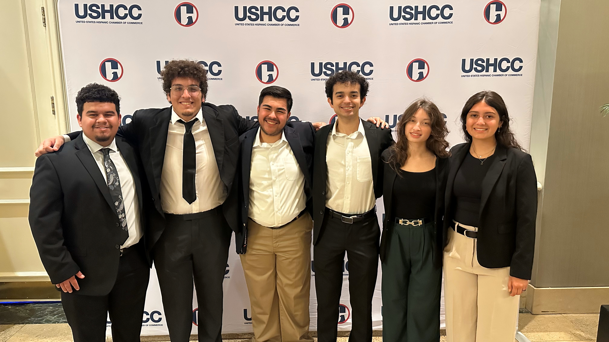

BSC provides members with valuable opportunities, including travel to professional events for firsthand industry experience. Additionally, members receive exclusive access to internships and job opportunities from employers. These experiences help students build their resumes and expand their professional networks. By participating in these opportunities, members gain a competitive edge in their careers.

BSC offers members the chance to travel for professional events, providing firsthand exposure to the business world. These experiences allow students to network, learn from industry leaders, and gain valuable insights that enhance their career development. Traveling for these events also helps members build confidence and expand their professional connections.
BSC connects members with exclusive internships, providing hands-on experience to apply their skills in real-world settings. These opportunities give students a competitive edge in their careers.
By gaining valuable experience, members can strengthen their resumes, expand their networks, and prepare for future success.